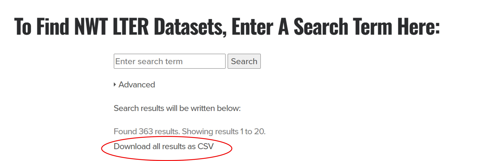
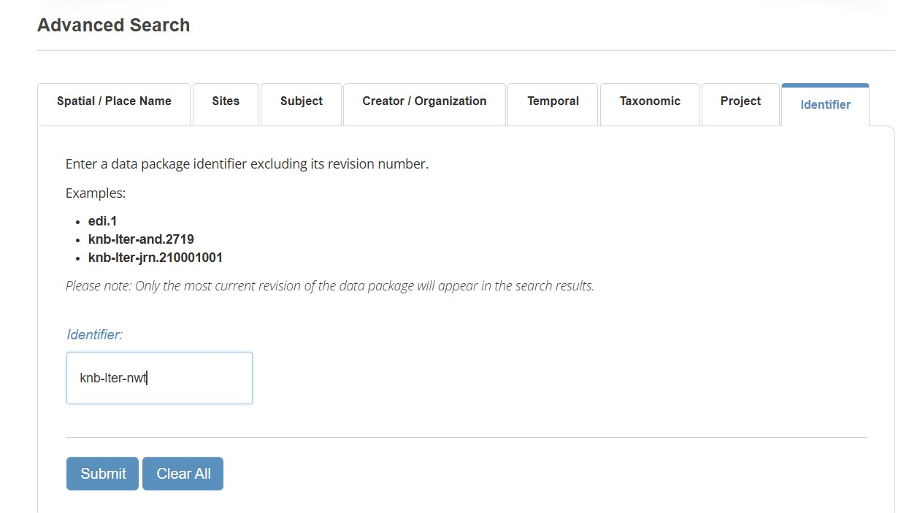
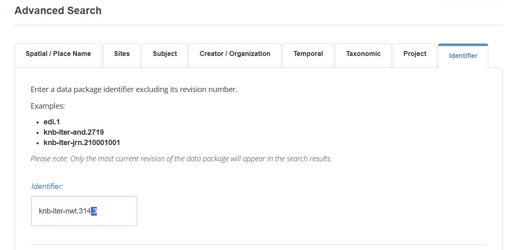

Finding Data
Search
Niwot data can be found by searching any of the Environmental Data Initiative (EDI) repository; the Niwot Ridge data catalog or DataOne.
We archive all datasets collected with LTER funds, which can sometimes make finding the dataset you want feel like looking for a needle in a haystack.
Anatomy of a Data Package
To effectively search it is helpful to understand the anatomy of a “data package” on EDI. A single data package contains one or many thematically linked data files (aka “entities”), which are archived together with their metadata, under a single packageID, referenced by a single dataset citation, and assigned a single DOI.
Within EDI, data package identifiers have the form scope.accession.version, where:
scope is a string value that identifies the organization, project, or theme of the data package. For Niwot Ridge datasets, the scope is always knb-lter-nwt
accession is an integer value that uniquely identifies the data package within the namespace of the scope
version is an integer value in increasing order that identifies the version of the data package
An example of a packageID is knb-lter-nwt.314.3
A DOI is a globally unique and persistent identifier that unambiguously resolves to the data package landing page. DOIs are used in citations and references of a data package.
An example of a DOI is doi:10.6073/pasta/7890c3264eb71bb992f0237844b02667
Niwot Catalog can be searched using the search box, which indexes the title, abstract and keywords, or through Advanced Search, which provides additional fields. Often, I find that the default search returns either too many or too few datasets, and it can be frustrating to page through them all on the web. In this case, it can be more efficient to download the entire catalog as a .csv and either search the results locally after opening the spreadsheet (CTL-F), or scanning quickly for a specific dataset or datasets of interest.

EDI catalog has both search and advanced search features. Narrowing the search to include only the Niwot scope (data packages beginning with knb-lter-nwt) will help reduce your search to Niwot LTER data

If you know the packageID of a dataset, you can enter that directly into the Identifier field of the EDI data catalog advanced search. Entering a packageID without a version will lead you to the most current version.

If you know the DOI of a dataset you can enter it directly into your browser to be taken to the landing page of the dataset, all you need to do is append the doi (the doi will start with 10.6073)